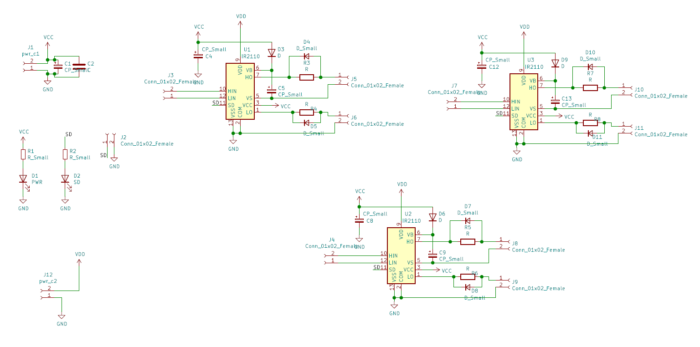

This article introduces the fundamental design of a ir2110 based motor driver and briefly touches up on the concept of a bootstrap capacitor.
The documentation pertaining to the IC can be found from the infineon website and datasheet
The IC itself is an integrated design which includes a high side and low side driver. This IC does NOT offer any internal electrical isolation and thus use of optocouplers is recommended. It uses two supplies, one for the logic (control) side and the other for the drive side. It is always recommended to use an isolated supply for the drive side e.g. a isolated buck/boost/flyback converter. There are many integrated solutions for such applications. The IC also does NOT possess an internal dead-time or blanking time circuitry and that needs to be handled externally as well (either through hardware on the signal lines or in software).
Use of the circuit is fairly simple. However the high side bootstrap capacitor needs to be selected carefully. Since the value for optimal operation of circuit relates to the operating frequency, gate charge of the switches etc. There are several online calculators that can be used to determine the value of bootstrap capacitors for a specific application. The value typically does not exceed 10uF.
The circuit for the 3 phase motor driver design can be seen below. Note that the schematic does not show gate pull-up/down resistors which will be installed near the switches themselves. The power supply for the driver-side for this IC should be capable of supplying at least 2-3 amperes, although it can operate on lower rated values as well.

keil uVision and STM32CubeMX: A brief introduction on PWM generation on STM32
This day and age operate on miniscule chunks of extremely engineered silicon, the micro-controllers, that operate almost everything electrical around us involving use of control techniques for purposes as simple as temperature sensing or simple noise cancellation in digital domain or speed control of motors in Trains or in a refrigerator compressor. These micro-controllers come in various shapes and sizes, for various purposes, in various processing powers. Some big micro-controller manufacturers being microchip, Texas Instruments, Atmel. These companies provide diverse lines of microcontrollers each having its own advantage. A very popular embedded systems platform Arduino is based on Atmel microcontrollers mostly 8-bit. However, being just 8-bit, it becomes a bottleneck at times for heavier data processing, another such popular micro-controller line-up is 32-bit STM32 series, this series is very popular with industries and embedded developers. The platform is subdivided into various segments with features such as 12-bit ADCs with up to 1 μs sampling time, and inbuilt DACs, several GPIOS, several interfaces such as I2C, SPI, UART, and varying flash sizes from 64KB up to 2MB. This article will introduce you to STM32 development using a simple example involving PWM generation and GPIO toggle on a STM32F103x8 series microcontroller. Let’s first get acquainted with software and Hardware this article is based on, however the concept applies for all the STM32 line-up.
STM32CubeMX is a GUI code initialisation software by ST-Microelectronics. This helps in configuring pins and I/O of the hardware easily without any hassle of looking through the data sheet for the setup procedures. Keil uVision is the IDE used for the development. (Free for 32kB size limit version)
ST-link v2 is used for programming and debugging the STM32 in real time using Serial-Wire debugging.
The hardware programming for STM32 MCUs is mostly done on HAL or Hardware Abstraction Layer library. This library provides better human readable code and thus saves on time. The Software used for setting up the pins and their modes of operation and other MCU parameters is done using STM32CubeMX because it is a GUI and thus configuration becomes hassle free, giving user more time to work on the actual code for a given application. After setting up of the MCU is done, the project file is then generated and opens with keil μvision IDE, the setup code is already fed into the source file by STM32CubeMX. Now the code for the set application can be written here. Keil IDE provides platform as well as function specific extensive documentation within its interface on references and books section regarding the MCU as well as HAL and LL (Low Level Library). STM32CubeMX utility allows the user to set pin modes such as for purposes like I2C communication, operating frequency up to 72MHz using internal PLL clock generator or setting feature specific settings for example timer count or pre-scalar for ADC. This utility also has a power calculator for calculating power consumption of the device, to estimate operational conditions. ST-Link v2 is a Serial Wire Debugger and Programmer for STM32 MCU series. This piece of hardware is used for debugging and programming the MCU. The best way to learn is by trying, you can go to my GitHub and download the code and try it yourself. However here is a small PWM generating program along with explanation. Why, PWM? Because it is one of the most widespread control techniques in areas like motor speed and position control.
This code was run on STM32F103C8 MCU. However, the procedure is the same for all other STM32 variants. As you can see several pins can be used for PWM. Here pin A0 is used for the PWM output.
Connect the ST-Link v2 with the board as shown in figure. Now open STM32CubeMX. Create a new Project and select STM32F103C8. The interface loads. [Now, to generate PWM; a carrier and a reference is required. The MCU has inbuilt hardware for this purpose. The carrier is usually a ramp wave, which is generated using a timer, since the MCU boasts 16-bit timers it means the timers can count up to 65535, and the PWM frequency be configured as such. The output PWM channel can be set to inverted or non-inverted modes.] This example uses Channel-1 of Timer-2, so check their boxes, set the RCC High Speed Clock (HSE) to crystal/ceramic. To enable debugging set debug under SYS to Serial Wire. Under TIM2 set clock source to internal and channel 1 dropdown to ‘PWM Generation CH1’. Now go to Configuration Tab and click TIM1 under Control, in the popup set prescalar to 72 and Counter Period to 8192 (These values are set so as to generate a PWM of 120Hz frequency, the formula is provided in the datasheet). Once done, press generate source code based on user setting’ icon under the project menu. In the following prompt set IDE to MDK-ARM V5. And proceed, the keil IDE launches if installed.
In the Keil IDE open the main.c file under src folder in workspace explorer. In main function under ‘user code 2’ section enter the following commands HAL_TIM_PWM_Start(&htim2, TIM_CHANNEL_1); htim2.Instance->CCR1=819;//enter a fraction of value fed to auto-reload register in CubeMX Now build and upload code to the MCU. At pin A0 there should be a PWM wave with duty of 10 percent and 120Hz frequency with Vmax = 3.3 Volts, since the MCU operates at 3.3Volts.
https://www.st.com/en/microcontrollers/stm32-32-bit-arm-cortex-mcus.html, official STM32 site https://www2.keil.com/stmicroelectronics-stm32/mdk, keil official website
For more STM32 programming details following resources might be helpful; STM32 Programming Reference | STM32 Datasheet
Badri Y.I., Hussain I., Ahmad Z., Usman M., Ali J. (2021) A New Modular Multilevel Converter Topology Using Flying Ultra-Capacitor and Cascaded H-bridges. In: Vadhera S., Umre B.S., Kalam A. (eds) Latest Trends in Renewable Energy Technologies. Lecture Notes in Electrical Engineering, vol 760. Springer, Singapore. https://doi.org/10.1007/978-981-16-1186-5_8
Supercapacitor based multilevel converter for EVs
DACard Basic platform (4 channel adc, 1 lvac, 1 crossing detector, 6 pwm ch, computer frontend)
Arduino Oscilloscope
Analysis of a 500kW Photovoltaic setup with local storage
Power electronic test bench (~1.3kW) with custom sensor hardware (LV-25 voltage sensors and LA-25 current sensors, single layer boards)
Console program for demonstrating load flow analysis (GS algorithm)
Three phase motor driver based on IR2110
Pressure/Temperature sensor for solar pressure chamber
Circuit simulation demonstration using a program
Program for design of motors and transformers
Cadence sensor
Water level (ultrasonic) sensing and alarm